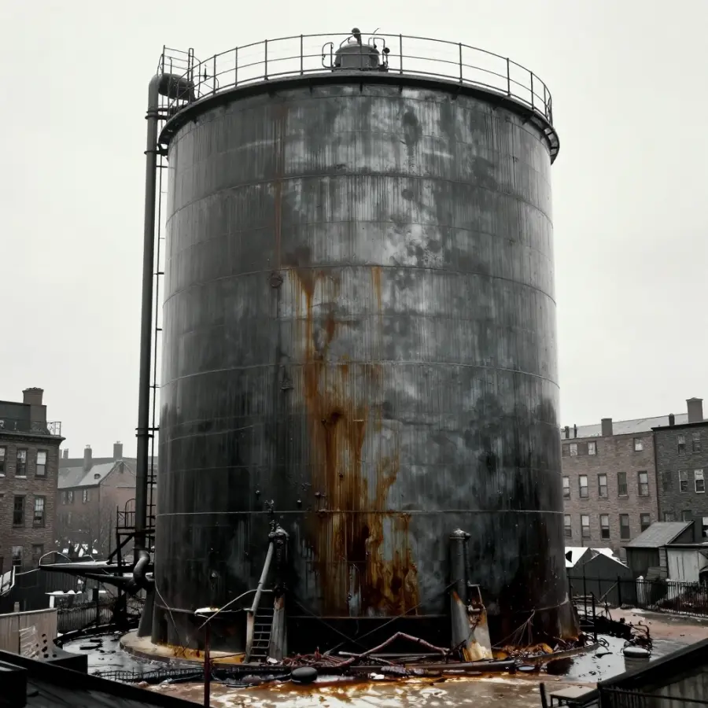

The Great Molasses Flood

The aftermath of the Great Molasses Flood - a deadly wave of sticky sweetness!
On January 15, 1919, something bizarre happened in Boston's North End neighborhood. A massive tank containing 2.3 million gallons of molasses burst open, sending a deadly wave of sticky syrup through the streets at 35 miles per hour!
This strange disaster killed 21 people, injured 150 more, and destroyed buildings, trains, and a fire station. But here's the mystery: how could molasses - a thick, slow-moving syrup - move fast enough to cause so much destruction?
Overview
A Sweet but Deadly Day
It was an unusually warm winter day in Boston - about 40°F (4°C). The Purity Distilling Company had a massive steel tank, 50 feet tall and 90 feet wide, filled to the brim with molasses. They used it to make rum and industrial alcohol.
Around 12:30 PM, people in the neighborhood heard a sound like machine gun fire. Then the tank exploded!
🌊 The Wave
The molasses wave was initially 25 feet tall and moved at 35 mph - faster than anyone could run!
The Destruction

The molasses destroyed everything in its path - buildings, trains, and lives.
The wave of molasses smashed houses, knocked a fire station off its foundation, and swept away a train on the nearby tracks. People and horses were trapped in the sticky mess, unable to move.
The disaster happened so fast that many victims never had a chance to escape. Some were crushed by debris, others drowned in the thick syrup. It was a horrific scene that seemed impossible - how could something as innocent as molasses become so deadly?
🐴 The Horses
Rescuers had to shoot horses trapped in the molasses because they couldn't pull them free from the sticky syrup.
Evidence
Historical work on The Great Molasses Flood is strongest when primary records, material traces, and later peer-reviewed analysis point in the same direction. This layered approach helps separate observations from retellings and reduces the risk of repeating popular but unsupported claims.
The Science of Sticky
Cleanup took weeks - workers used salt water to wash away the molasses!
Here's where science explains the mystery. Molasses is a "non-Newtonian fluid" - its thickness changes based on temperature and pressure. When cold, it's extremely thick. When warm, it flows more easily.
On that January day, the warm weather had heated the molasses, making it thinner. When the tank burst, the pressure pushed the molasses forward in a massive wave. But as it spread out and cooled, it quickly became thick and sticky again - trapping everything in its path!
Competing Explanations
Competing explanations usually persist because each one fits part of the evidence while missing another part. Researchers test these models against chronology, physical constraints, and independent documentation to identify which interpretation requires the fewest assumptions.
Why Did the Tank Explode?
Investigations revealed that the tank was poorly constructed. The walls were too thin for the amount of molasses inside. Even worse, the company had never properly tested it!
- Thin steel: The tank walls were only half as thick as they should have been
- No inspection: The tank had never been properly tested for leaks
- Fermentation: Some scientists believe the molasses was fermenting, creating gas pressure inside
- Temperature change: The warm day after a cold snap may have stressed the metal
⚖️ Justice Served
The company was found responsible and had to pay the equivalent of $15 million in today's money to victims' families!
Open Questions
Open questions remain because source quality is uneven across time: some records are direct and detailed, while others are fragmentary or second-hand. Future archival discoveries, improved imaging, and more precise dating methods may refine conclusions without overturning well-supported core findings.
A Lasting Legacy
Today, the North End neighborhood has a small plaque marking the disaster. Locals say that on hot summer days, you can still smell molasses in the area - though scientists say this is probably just a legend!
The Great Molasses Flood remains one of history's strangest disasters - a reminder that even something sweet can be dangerous when safety is ignored!
References & Further Reading
Editorial note: We cross-check claims across multiple independent sources. See our Editorial Policy.